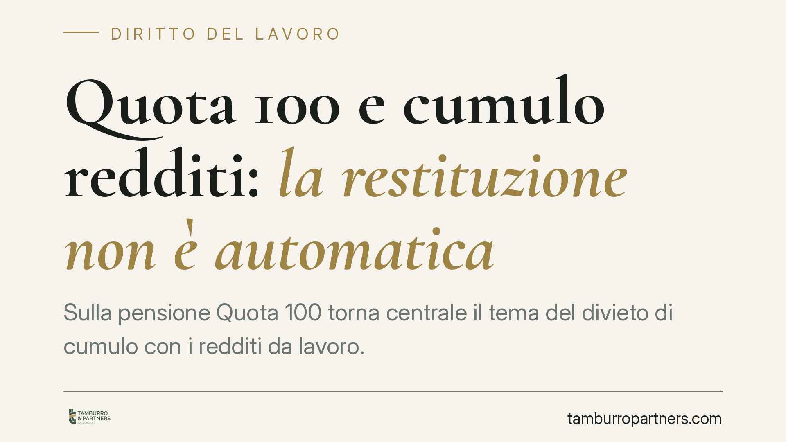

Quota 100 e cumulo redditi: la restituzione non è automatica
Sulla pensione Quota 100 torna centrale il tema del divieto di cumulo con i redditi da lavoro. Il nodo è la sanzione: quando un pensionato percepisce redditi incompatibili, l'INPS può chiedere la restituzione di un'intera annualità di pensione? La questione non è pacifica e merita un esame attento del titolo pensionistico e dei conteggi effettuati dall'ente.

Il contesto
Quota 100 ha permesso l'uscita anticipata dal lavoro a chi maturava almeno 62 anni di età e 38 anni di contributi. A fronte di questa agevolazione, il legislatore ha previsto un vincolo stringente: chi percepisce la pensione non può, di regola, produrre redditi da lavoro.
Il problema emerge nella fase sanzionatoria. Quando l'INPS riscontra redditi incompatibili, tende a richiedere la restituzione dell'intera annualità di pensione percepita nell'anno in cui si è verificata la violazione. È proprio su questa prassi che si concentrano le contestazioni dei pensionati.
Inquadramento normativo
Il divieto di cumulo è disciplinato dall'art. 14, comma 3, del d.l. 4/2019, convertito con modificazioni dalla legge 26/2019. La norma stabilisce l'incumulabilità della pensione Quota 100 con i redditi da lavoro dipendente o autonomo per il periodo che va dalla decorrenza del trattamento fino al compimento dell'età prevista per la pensione di vecchiaia.
La stessa disposizione prevede un'eccezione: sono compatibili i redditi da lavoro autonomo occasionale entro il limite di 5.000 euro lordi annui. È un dato pacifico, richiamato anche dalla prassi applicativa dell'ente. Si tratta quindi di una franchigia che non fa scattare il divieto.
Il punto controverso non è l'esistenza del divieto, ma la misura della conseguenza. Il testo normativo sanziona la violazione, ma non specifica in modo univoco che il pensionato debba sempre restituire un'intera annualità, a prescindere dall'entità e dalla durata del reddito prodotto.
La questione della sanzione
La prassi dell'INPS di pretendere la restituzione automatica dell'intera pensione annua è stata oggetto di contenzioso. Alcune pronunce di merito hanno valorizzato un'interpretazione più proporzionata, distinguendo tra la mera percezione di redditi incompatibili e la quantificazione effettiva di quanto l'ente può recuperare.
Su questo tema invitiamo alla prudenza. Allo stato, non è identificabile un consolidato orientamento di legittimità documentato da estremi precisi: chi incontra riferimenti a una presunta posizione della Cassazione dovrebbe pretendere l'indicazione del numero e dell'anno della pronuncia e verificarne il contenuto effettivo. In assenza di tale riscontro, la tesi favorevole al pensionato va trattata come argomento difensivo da costruire caso per caso, non come esito scontato.
Va poi ricordato che i giudici di merito possono valorizzare gli indirizzi di legittimità, ma restano liberi nella valutazione del singolo caso: non esiste automatismo di adesione.
Implicazioni pratiche
Per il pensionato Quota 100 che riceve una richiesta di restituzione, la differenza è sostanziale. Un conto è vedersi contestata la restituzione di somme proporzionate ai redditi prodotti; un altro è subire la pretesa di un'intera annualità, con importi che possono superare le decine di migliaia di euro.
La prima verifica riguarda sempre l'esistenza e la natura del reddito contestato: redditi da lavoro autonomo occasionale entro i 5.000 euro lordi annui non violano il divieto. Al di sopra di tale soglia, o in presenza di redditi da lavoro dipendente, il divieto opera, ma resta aperto il tema della quantificazione.
Attenzione, infine, al pagamento spontaneo. Versare l'importo richiesto senza una valutazione preventiva può ridurre gli spazi di contestazione successiva e complicare un'eventuale azione di ripetizione.
Cosa fare in concreto
- Conservate la comunicazione dell'INPS e verificate la base di calcolo: anno, tipologia di reddito e importo richiesto.
- Controllate la natura dei redditi contestati e se rientrano nella franchigia di 5.000 euro lordi annui per lavoro autonomo occasionale.
- Non pagate spontaneamente prima di una valutazione tecnica: il versamento può pregiudicare la successiva contestazione.
- Richiedete l'esatta motivazione della pretesa e gli estremi normativi su cui l'ente fonda la restituzione dell'intera annualità.
- Rivolgetevi a un professionista per valutare i termini di impugnazione e la sostenibilità di un'azione, verificando l'eventuale giurisprudenza richiamata.
Disclaimer
Contributo informativo a cura di Tamburro & Partners - Avv. Giuseppe Tamburro. Non costituisce parere legale.
Ogni storia di lavoro ha i suoi tempi.
Se gestisci HR e vuoi un confronto su contenzioso, ispezioni o licenziamenti, scrivi allo studio. Ti rispondiamo entro un giorno lavorativo.